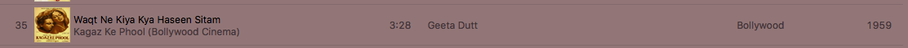

6.1 Introduction to Structured Data
Earlier we had our first look at types. Until now, we have only seen the types that Pyret provides us, which is an interesting but nevertheless quite limited set. Most programs we write will contain many more kinds of data.
6.1.1 Understanding the Kinds of Compound Data
6.1.1.1 A First Peek at Structured Data
An iTunes entry contains a bunch of information about a single song: not only its name but also its singer, its length, its genre, and so on.

Your GMail application contains a bunch of information about a single message: its sender, the subject line, the conversation it’s part of, the body, and quite a bit more.

6.1.1.2 A First Peek at Conditional Data
A traffic light can be in different states: red, yellow, or green.Yes, in some countries there are different or more colors and color-combinations. Collectively, they represent one thing: a new type called a traffic light state.
A zoo consists of many kinds of animals. Collectively, they represent one thing: a new type called an animal. Some condition determines which particular kind of animal a zookeeper might be dealing with.
A social network consists of different kinds of pages. Some pages represent individual humans, some places, some organizations, some might stand for activities, and so on. Collectively, they represent a new type: a social media page.
A notification application may report many kinds of events. Some are for email messages (which have many fields, as we’ve discussed), some are for reminders (which might have a timestamp and a note), some for instant messages (similar to an email message, but without a subject), some might even be for the arrival of a package by physical mail (with a timestamp, shipper, tracking number, and delivery note). Collectively, these all represent a new type: a notification.
6.1.2 Defining and Creating Structured and Conditional Data
We have used the word “data” above, but that’s actually been a bit of a lie. As we said earlier, data are how we represent information in the computer. What we’ve been discussing above is really different kinds of information, not exactly how they are represented. But to write programs, we must wrestle concretely with representations. That’s what we will do now, i.e., actually show data representations of all this information.
6.1.2.1 Defining and Creating Structured Data
The song’s name, which is a
String.The song’s singer, which is also a
String.The song’s year, which is a
Number.
data ITunesSong: song(name, singer, year) endITunesSongWe follow a convention that types
always begin with a capital letter.. The way we actually make one of
these data is by calling song with three parameters; for
instance:It’s worth noting that music managers that are
capable of making distinctions between, say, Dance, Electronica, and
Electronic/Dance, classify two of these three songs by a single genre:
“World”.
song("La Vie en Rose", "Édith Piaf", 1945)
song("Stressed Out", "twenty one pilots", 2015)
song("Waqt Ne Kiya Kya Haseen Sitam", "Geeta Dutt", 1959)lver = song("La Vie en Rose", "Édith Piaf", 1945)
so = song("Stressed Out", "twenty one pilots", 2015)
wnkkhs = song("Waqt Ne Kiya Kya Haseen Sitam", "Geeta Dutt", 1959)In terms of the directory, structured data are no different from simple data. Each of the three definitions above creates an entry in the directory, as follows:
Directory
lver→song("La Vie en Rose", "Édith Piaf", 1945)so→song("Stressed Out", "twenty one pilots", 2015)wnkkhs→song("Waqt Ne Kiya Kya Haseen Sitam","Geeta Dutt", 1959)
6.1.2.2 Annotations for Structured Data
data ITunesSong: song(name :: String, singer :: String, year :: Number) endlver :: ___ = song("La Vie en Rose", "Édith Piaf", 1945)ITunesSong. Therefore, we should write
lver :: ITunesSong = song("La Vie en Rose", "Édith Piaf", 1945)Do Now!
What happens if we instead write this?lver :: String = song("La Vie en Rose", "Édith Piaf", 1945)What error do we get? How about if instead we write these?lver :: song = song("La Vie en Rose", "Édith Piaf", 1945) lver :: 1 = song("La Vie en Rose", "Édith Piaf", 1945)Make sure you familiarize yourself with the error messages that you get.
6.1.2.3 Defining and Creating Conditional Data
data construct in Pyret also lets us create conditional
data, with a slightly different syntax. For instance, say we want to
define the colors of a traffic light:
data TLColor:
| Red
| Yellow
| Green
endRed rather than red.
Each | (pronounced “stick”) introduces another option. You
would make instances of traffic light colors as
Red
Green
Yellowdata Animal:
| boa(name :: String, length :: Number)
| armadillo(name :: String, liveness :: Boolean)
endb1 = boa("Ayisha", 10)
b2 = boa("Bonito", 8)
a1 = armadillo("Glypto", true)Do Now!
How would you annotate the three variable bindings?
Notice that the distinction between boas and armadillos is lost in the annotation.
b1 :: Animal = boa("Ayisha", 10)
b2 :: Animal = boa("Bonito", 8)
a1 :: Animal = armadillo("Glypto", true)data ITunesSong: song(name, singer, year) enddata ITunesSong:
| song(name, singer, year)
end6.1.3 Programming with Structured and Conditional Data
take apart the fields of a structured datum, and
tell apart the variants of a conditional datum.
As we’ll see, Pyret also gives us a convenient way to do both together.
6.1.3.1 Extracting Fields from Structured Data
ITunesSong) and
produces (a Number). This gives us a rough skeleton for the
function:
fun song-age(s :: ITunesSong) -> Number:
<song-age-body>
end2016 - <get the song year>. followed by a field’s name—year—year field of s (the parameter
to song-age) with
s.yearfun song-age(s :: ITunesSong) -> Number:
2016 - s.year
endfun song-age(s :: ITunesSong) -> Number:
2016 - s.year
where:
song-age(lver) is 71
song-age(so) is 1
song-age(wnkkhs) is 57
end6.1.3.2 Telling Apart Variants of Conditional Data
cases, as we saw for lists. We create one branch for each of
the variants. Thus, if we wanted to compute advice for a driver based on a
traffic light’s state, we might write:
fun advice(c :: TLColor) -> String:
cases (TLColor) c:
| Red => "wait!"
| Yellow => "get ready..."
| Green => "go!"
end
endDo Now!
What happens if you leave out the
=>?
Do Now!
What if you leave out a variant? Leave out the
Redvariant, then try bothadvice(Yellow)andadvice(Red).
6.1.3.3 Processing Fields of Variants
In this example, the variants had no fields. But if the variant has
fields, Pyret expects you to list names of variables for those fields,
and will then automatically bind those variables—.-notation to get the field values.
fun animal-name(a :: Animal) -> String:
<animal-name-body>
endAnimal is conditionally defined, we know that we are
likely to want a cases to pull it apart; furthermore, we should
give names to each of the fields:Note that the names of the
variables do not have to match the names of
fields. Conventionally, we give longer, descriptive names to
the field definitions and short names to the corresponding variables.cases (Animal) a:
| boa(n, l) => ...
| armadillo(n, l) => ...
endn, giving us the
complete function:
fun animal-name(a :: Animal) -> String:
cases (Animal) a:
| boa(n, l) => n
| armadillo(n, l) => n
end
where:
animal-name(b1) is "Ayisha"
animal-name(b2) is "Bonito"
animal-name(a1) is "Glypto"
endanimal-name(boa("Bonito", 8))boa("Bonito", 8) is a value. In the same way as we
substitute simple data types like strings and numbers for parameters
when we evaluate a function, we do the same thing here. After
substituting, we are left with the following expression to evaluate:cases (Animal) boa("Bonito", 8):
| boa(n, l) => n
| armadillo(n, l) => n
endNext, Pyret determines which case matches the data (the first one, for
boa, in this case). It then substitutes the field names with the
corresponding components of the datum result expression for the
matched case. In this case, we will substitute uses of n with
"Bonito" and uses of l with 8. In this program,
the entire result expression is a use of n, so the result of
the program in this case is "Bonito".